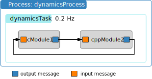

Connecting Messages
So far we have learned how to add C or C++ Basilisk modules to a task, setting priorities to execute those modules, and specifying update rates; next we will look at how to connect module messages to one another. Messages are anything that a module outputs after it is executed, such as spacecraft state information, battery power, etc. Again we use both Module: cModuleTemplate and Module: cppModuleTemplate as the stand-in modules to illustrate setting message connections. Note that the input and output message connections of these modules are of the same type. The following simulation script again uses a single process and task. The modules are created and their input and output messages are connected as illustrated below.
The source code is shown below. As we are going to be using the Basilisk messaging system now, it is important to import the messaging package from Basilisk.architecture. Without this the python code will not know how to subscribe to any message type, or how to create a stand-alone message.
1
2from Basilisk.moduleTemplates import cModuleTemplate
3from Basilisk.moduleTemplates import cppModuleTemplate
4from Basilisk.utilities import SimulationBaseClass
5from Basilisk.utilities import macros
6from Basilisk.architecture import messaging
7
8
9def run():
10 """
11 Illustration of connecting module messages
12 """
13
14 # Create a sim module as an empty container
15 scSim = SimulationBaseClass.SimBaseClass()
16
17 # create the simulation process
18 dynProcess = scSim.CreateNewProcess("dynamicsProcess")
19
20 # create the dynamics task and specify the integration update time
21 dynProcess.addTask(scSim.CreateNewTask("dynamicsTask", macros.sec2nano(5.)))
22
23 # create modules
24 mod1 = cModuleTemplate.cModuleTemplate()
25 mod1.ModelTag = "cModule1"
26
27 mod2 = cppModuleTemplate.CppModuleTemplate()
28 mod2.ModelTag = "cppModule2"
29
30 # add modules to task list
31 scSim.AddModelToTask("dynamicsTask", mod1)
32 scSim.AddModelToTask("dynamicsTask", mod2)
33
34 # connect messages
35 mod2.dataInMsg.subscribeTo(mod1.dataOutMsg)
36 mod1.dataInMsg.subscribeTo(mod2.dataOutMsg)
37
38 # initialize Simulation:
39 scSim.InitializeSimulation()
40
41 # configure a simulation stop time and execute the simulation run
42 scSim.ConfigureStopTime(macros.sec2nano(5.0))
43 scSim.ExecuteSimulation()
44
45 return
46
47
48if __name__ == "__main__":
49 run()
The method .subscribeTo() connects an output message (variable name ending with OutMsg) to an input message (variable name ending with InMsg), as shown in lines 36-37 above. While C modules contain message objects with a C interface, and C++ modules contain C++ message objects, the .subscribeTo() method is set up such that the user doesn’t have to worry about this distinction. Rather, this method connects C to C, C to C++, C++ to C++ and C++ to C message connections.
Thus, a module output message anotherModule.xxxOutMsg is connected to a module input message someModule.xxxInMsg using the .subscribeTo() method as follows:
someModule.xxxInMsg.subscribeTo(anotherModule.xxxOutMsg)
The input and output message names are arbitrary. However, the messages being connected must be of the same type. In the above simulation code we use this protocol to connect the output message of the C module 1 to the input message of C++ module 2. Next the output of C++ module 2 is connected to the input of C module 1 to create a sample closed-loop messaging setup.
Warning
You can only subscribe an input message to an output message that already exists! Don’t try to subscribe to the message before it has been created. In this simulation the subscriptions are all occurring after the modules are created.
If you execute this python code you should see the following terminal output:
source/codeSamples % python3 bsk-3.py
BSK_INFORMATION: Variable dummy set to 0.000000 in reset.
BSK_INFORMATION: Variable dummy set to 0.000000 in reset.
BSK_INFORMATION: C Module ID 1 ran Update at 0.000000s
BSK_INFORMATION: C++ Module ID 2 ran Update at 0.000000s
BSK_INFORMATION: C Module ID 1 ran Update at 5.000000s
BSK_INFORMATION: C++ Module ID 2 ran Update at 5.000000s
Note that here the two modules are added without setting a priority. Thus, they are executed in the order that they were added to the Basilisk task.
If you want to undo any existing connection to a module input message someModule.xxxInMsg, you need to use the .unsubscribe() method:
someModule.xxxInMsg.unsubscribe()